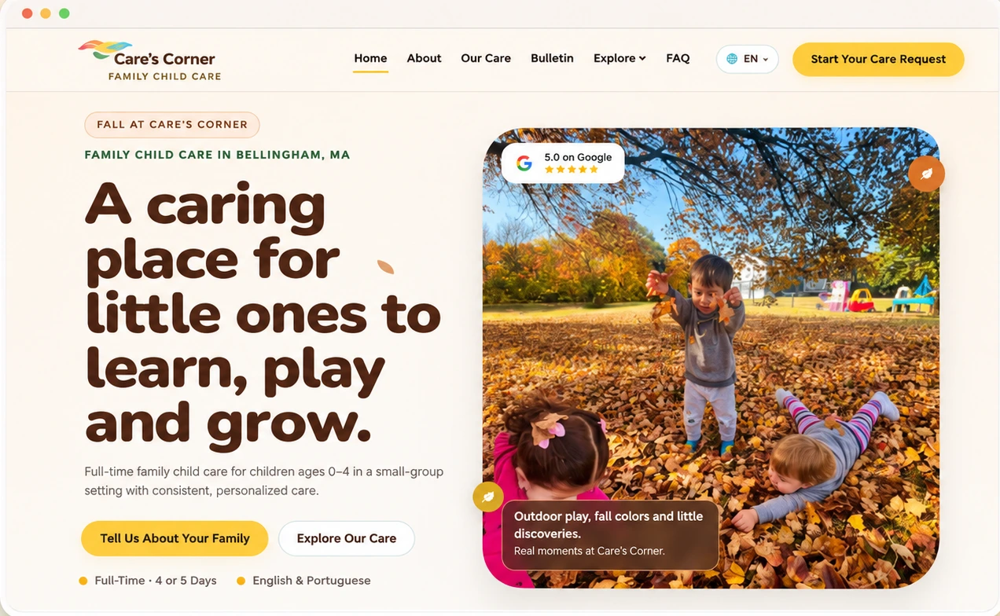
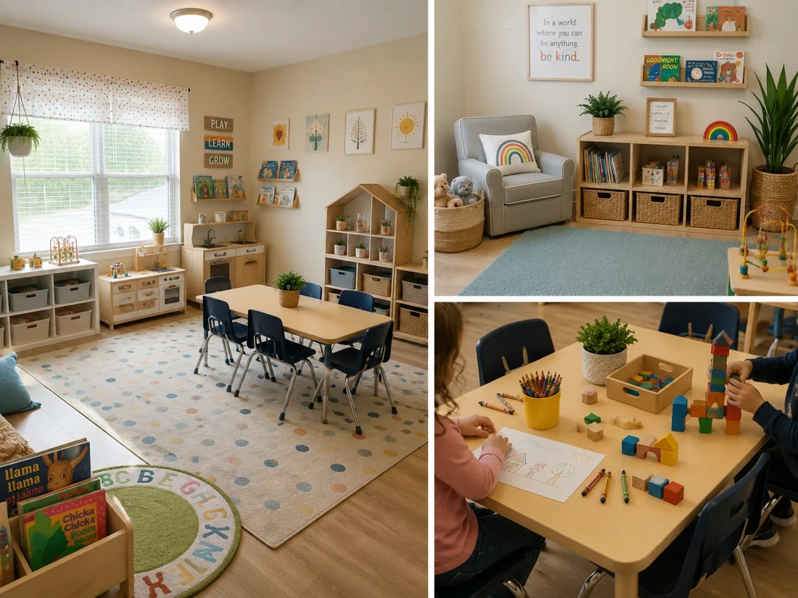
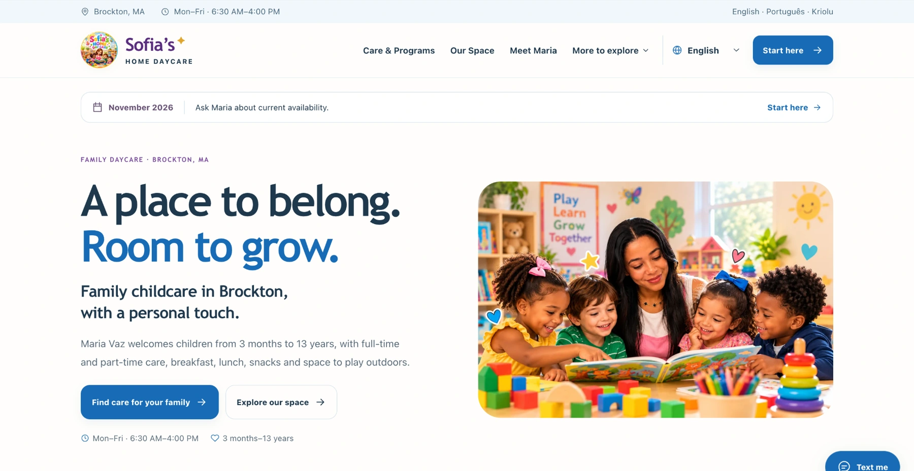
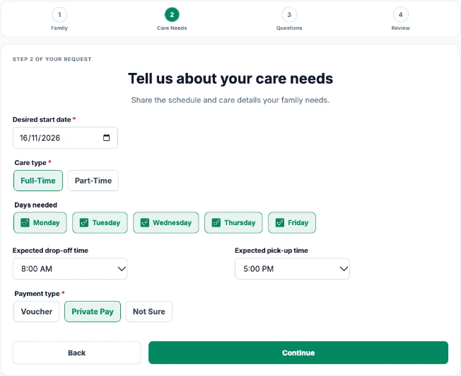
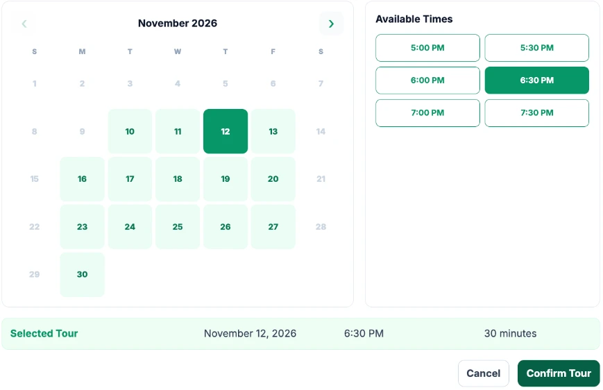
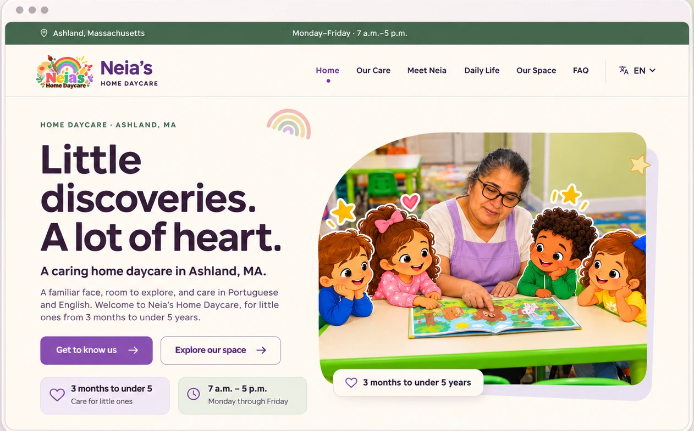

Care’s Corner Childcare
La familia conoce la rutina, ve el espacio y puede solicitar una visita desde el celular.
Ayudamos a las familias de tu zona a encontrar tu daycare, conocer tu espacio y solicitar una visita.
Quiero dar a conocer mi daycare ↗Busca en Google, ve un anuncio en Facebook o Instagram, o recibe el enlace público de alguien que conoce tu daycare.
En tu sitio web, la familia conoce cómo funciona la daycare y completa el Family Request con los días y horarios que necesita.
En SmartMate Leads, ves lo que busca la familia y coordinas el mejor horario para la visita.
La familia visita la daycare. Si decide inscribirse, registras la matrícula en SmartMate.
Ayuda a las familias a encontrarte.
Organizamos tu perfil en Google Maps con fotos, horarios y formas de contacto para quienes buscan una daycare cerca.

Family child care · Framingham, MA
Presenta tu daycare antes de la primera visita.
La familia conoce tu espacio, horarios y programas, y puede solicitar una visita desde el celular.

La familia da el primer paso.
Desde el sitio web, la familia indica el programa que le interesa y el horario que necesita. La solicitud llega a SmartMate Leads para que tu equipo revise la disponibilidad y coordine la visita.

De la solicitud recibida a la visita agendada.
Cuando llega un Family Request, tu equipo ve quién pidió información y a quién debe responder. Desde allí, puede invitar a una visita, organizar la lista de espera o acompañar a la familia hasta la matrícula.

Aparece en las búsquedas de tu ciudad.
Creamos páginas sobre tus programas y las ciudades que atiendes para ayudar a las familias de la zona a encontrar tu sitio web en las búsquedas.
Conoce nuestra rutina diaria, programas y espacio de cuidado infantil en Lancaster, Massachusetts.
Anúnciate cuando una familia busca un cupo.
Anúnciate en las búsquedas de familias que ya buscan daycare. También verificamos si tu zona y tu programa pueden usar Local Services Ads (LSA).
Visita nuestras aulas, conoce a las maestras y pregunta por los cupos disponibles para tu hijo.
Lleva tu programa al feed de las familias.
Presenta tu daycare en Facebook e Instagram con anuncios dirigidos a las familias de tu zona.

La familia conoce la rutina, ve el espacio y puede solicitar una visita desde el celular.

El sitio web bilingüe lleva a la familia al formulario. En SmartMate, la proveedora da seguimiento a cada solicitud y al próximo contacto.
“Estoy muy satisfecha con el trabajo de MateGrowth. En poco tiempo ya obtuve resultados. Atendí a una familia que me encontró a través de Google.”
Espaço dos Anjos Child CareClinton, MA
“¡Un trabajo increíble! Muy atentos, profesionales y siempre aportando excelentes ideas. ¡Me encanta el resultado!”
Care’s Corner ChildcareBellingham, MA
“¡Guau, muchísimas gracias! Sinceramente, me pregunto: dónde estuvieron todo este tiempo? ¡Ojalá los hubiera encontrado antes, porque están haciendo un trabajo increíble y son maravillosos en lo que hacen! ¡Con esta nueva solicitud, ya son tres familias que se han puesto en contacto tan solo esta semana! Eso demuestra cuánto están trabajando por mi negocio. Estoy profundamente agradecida por toda su dedicación y apoyo. ¡Son los mejores y estoy muy agradecida de tenerlos a mi lado! 🥰”
FernandaBrockton, MATraducido del inglés
Cuéntanos qué te gustaría mejorar. Usaremos tus respuestas para conversar sobre el próximo paso.